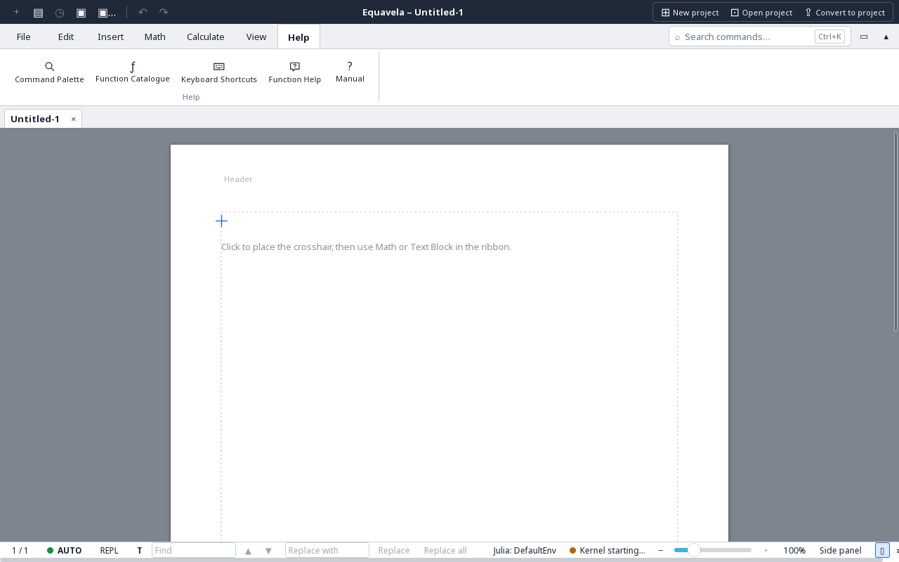
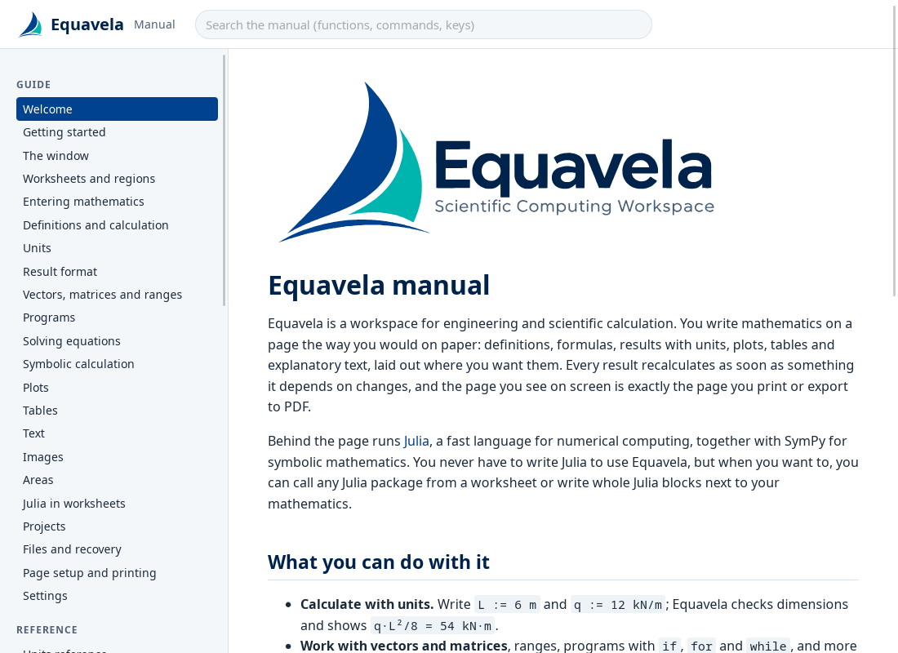

Live mathematics
Write expressions, define variables and functions, and see results update as your worksheet changes.
Scientific computing workspace
Equavela brings live mathematics, explanatory text and visualizations together in an engineering worksheet, powered by Julia.
Explore the workspaceEquavela is under active development.

One workspace for calculations, context and results.
The workspace
Build a worksheet that tells the story of your work, from definitions and units to results, plots and explanations.
Write expressions, define variables and functions, and see results update as your worksheet changes.
Work with physical units, matrices and vectors alongside your calculations.
Use Julia in your worksheets and explore symbolic operations with SymPy.
Combine math, text, plots, tables and images in a document ready to share.
Worksheet examples
Explore a sample worksheet and see how Equavela keeps the assumptions and calculations together.
Define a span and a distributed load with units, then calculate the maximum bending moment. The sample also demonstrates matrices, functions and calculus.
Download the example worksheet ↓Arrange definitions and equations in reading order, then evaluate the quantities that matter.
Place text and plots next to the mathematics to make the reasoning easy to follow.
Bring numerical code and worksheet calculations into the same project.
Learn the workspace
The built-in manual covers the workspace, mathematical editing, units, functions, projects and more.
